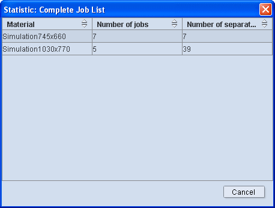

Во всех вкладках в разделе «задания» вы можете просмотреть для каждого выходного материала количество заданий с этим материалом и количество отделений (таблетки / пленки). Эти статистические данные формируются для каждой из заданий, показанных на открытой вкладке. Это позволяет вам быстро получить общее представление о заданийах, которые должны быть произведены или уже произведены, о том, сколько материала плиты было использовано и т. Д. Вы можете использовать эту информацию, например, для планирования материала, необходимого для рабочей смены.
1. Нажмите правой кнопкой мыши любое место в открытой вкладке.
2. Выберите «Статистика» в контекстно-чувствительном меню.
3. Открывается диалог «Статистика». Он отображает таблицу с материалами тарелки, используемыми в списке заданий открытой в настоящее время вкладки, соответствующее количество заданий и разделений.

Нажмите «Отменить», чтобы закрыть окно.
Copyright © 2013 Heidelberger Druckmaschinen AG